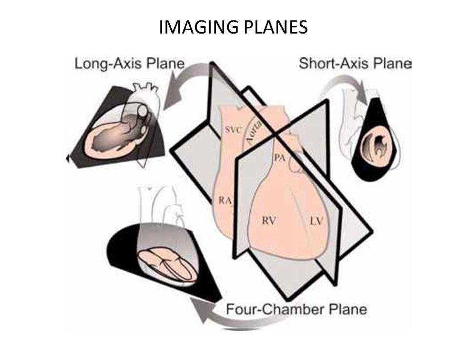
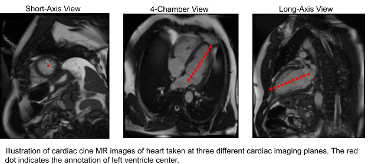
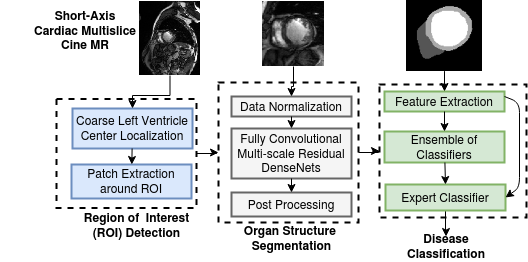
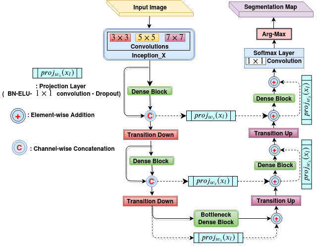
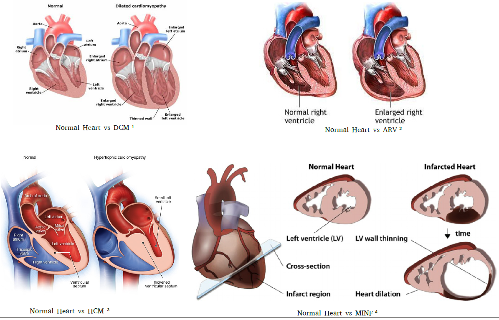
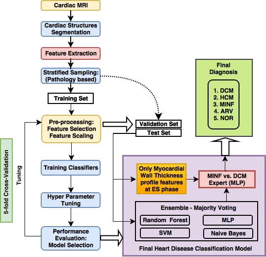
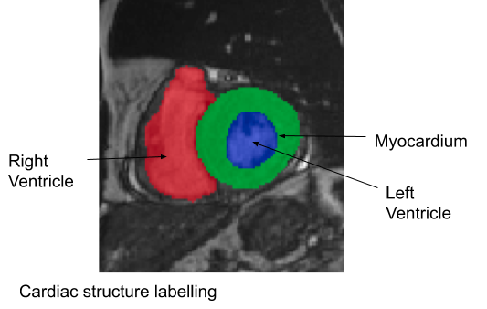
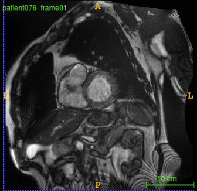
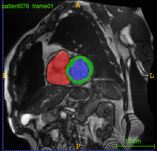

We give you the best AI and Data Science articles you want. Stay tuned to be updated about interesting research from our labs.
Blog Article
Deep learning in biomedical image analysis
Short Description
Medical imaging, specifically radiologic imaging is the most commonly used diagnostic tool for disease diagnosis and treatment assessment for a wide variety of conditions. Over the last decades the image acquisition hardware has improved significantly and corresponding image reconstruction software has become more sophisticated. These provide increasingly complex data both in terms of size and content, making it a challenging task for radiologists to sift through and arrive at meaningful diagnosis and therapeutic assessment. The role of AI/ML techniques in this context is to act as a radiologist's assistant to automate routine tasks and provide preliminary diagnosis. A radiologist can then use the outputs from these systems to speed up and improve accuracy of diagnosis.

Cardiac cine MRI

One of the complex and challenging diagnosis tasks involves cardiac cine Magnetic Resonance Imaging (MRI). Cardiac cine Magnetic Resonance Imaging (MRI) is primarily used for the assessment of cardiac function and diagnosis of Cardiovascular diseases (CVDs). Cardiac MRI is considered the most accurate method for the estimation of clinical parameters such as ejection fraction, ventricular volumes, stroke volume and myocardial mass. Cardiac cine MRI consists of images of the cross sections of the heart (entire heart can be covered) acquired at different time points during the cardiac cycle including end systole and end diastole. The diagnosis tasks consists of image segmentation to segment the left ventricle and derive quantitative measures to diagnose specific heart conditions.
We developed a deep learning based framework for cardiac segmentation which incorporated cardiac structures segmentation and cardiac disease diagnosis. The figure below illustrates the pipeline. The pipeline involved:


The figure above illustrates the schematic diagram of our FCN architecture. Our FCN's connectivity pattern was based on DenseNets. Multi-scale processing was incorporated in the initial layers of the network by performing convolutions on the input with different kernel sizes in parallel paths and later fusing them as in Inception architectures. The long skip and short-cut (residual) connections in the up-sampling path were computationally and memory-efficient when compared to standard skip connections based on copy and concatenation (as in U-Net Our FCN design ensured significant reduction in the number parameters (by a factor of 100 times compared to the existing state-of-the-art architecture like U-Net for biomedical segmentation), and it was found to be suitable where there was a constraint on the availability of large annotated training datasets and computational resources. The FCN was trained using a custom loss function based on a weighted combination of cross-entropy and Dice loss. We developed an ensemble of classifiers trained on the features extracted from the segmentation map for developing automated diagnosis models. Based on cardiac physiological parameters in the medical reports, the patients are grouped into five classes namely (i) normal- NOR, (ii) patients with previous myocardial infarction- MINF, (iii) patients with dilated cardiomyopathy- DCM, (iv) patients with hypertrophic cardiomyopathy- HCM, and (v) patients with abnormal right ventricle- ARV. The figure below illustrates the cardiac pathologies.

Deep Learning for cardiac MRI
Automated cardiac disease classification


By following these steps in framework and network design, we achieved almost state-of-the-art performance on multiple cardiac segmentation datasets namely- (i) On STACOM ACDC-2017 challenge test set for segmentation task achieved a mean dice score of 0.94, 0.91 and 0.89 for the left ventricle, right ventricle and myocardium respectively and for automated cardiac disease diagnosis the accuracy was 100%, (ii) On STACOM LV-2011 test set the approach achieved 0.74 Jaccard index for myocardium segmentation. On the Kaggle challenge test set, the approach gave a continuous ranked probability score (CRPS) of 0.0127 for left ventricular volume estimation.


We would like to improve upon this work in terms of segmentation accuracy at the apex and base of the heart where most of the errors occur. Disease diagnosis is another aspect which has to be tested out in a clinical setting. Taking this work beyond curated challenge datasets to a clinical setting is full of challenges. As MRI becomes increasingly common in hospitals in India, the adoption of these techniques would enhance the value of such imaging systems.
Input Image
Prediction
Ground Truth
References:
- Khened, Mahendra, Varghese Alex Kollerathu, and Ganapathy Krishnamurthi. "Fully convolutional multi-scale residual DenseNets for cardiac segmentation and automated cardiac diagnosis using ensemble of classifiers." Medical image analysis 51 (2019): 21-45.
- Bernard, Olivier, et al. "Deep learning techniques for automatic MRI cardiac multi-structures segmentation and diagnosis: is the problem solved?." IEEE transactions on medical imaging 37.11 (2018): 2514-2525.